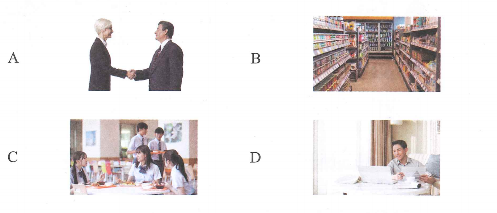
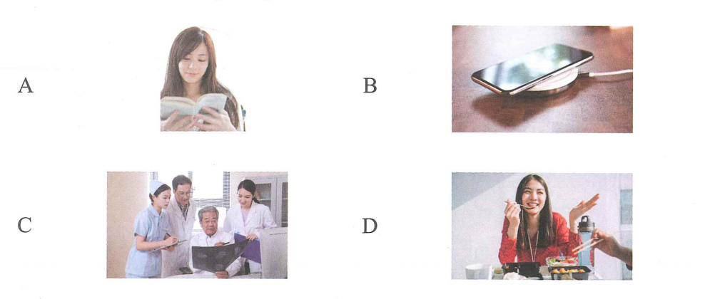

1.
Bài 8 · 第八课
我爸爸也在医院工作
Bố em cũng làm việc ở bệnh viện.
一、语音 · Ngữ âm
1. 音节辨析（1）· Phân biệt âm tiết (1)
Nghe ghi âm, chọn âm tiết nghe được và đọc to.
🔊 Phân biệt âm tiết (1)
2.
3.
4.
5.
6.
7.
8.
2. 音节辨析（2）· Phân biệt âm tiết (2)
Nghe và chọn từ có hai âm tiết không phải dạng từ láy (hoặc từ lặp lại).
🔊 Phân biệt âm tiết (2)
1.
2.
3.
4.
二、汉字 · Chữ Hán
1. Khái quát về cấu tạo chữ Hán
Chữ Hán gồm ba yếu tố cơ bản: hình, âm và nghĩa. Về cấu tạo, chữ Hán gồm nét, bộ phận cấu tạo và chữ hoàn chỉnh.
Nét là đơn vị nhỏ nhất cấu thành chữ Hán. Các nét thường gặp gồm: ngang, sổ, phẩy, mác, chấm, hất, gập và móc. Bộ phận cấu tạo do các nét tạo thành; có bộ phận có thể đứng độc lập thành chữ, có bộ phận phải kết hợp với bộ phận khác. Chữ hoàn chỉnh có thể là chữ đơn thể hoặc chữ hợp thể.
Viết chữ Hán phải tuân theo thứ tự nét. Nắm vững các nét cơ bản và quy tắc thứ tự nét là nền tảng để viết chữ Hán đúng và đẹp.
2. Các nét cơ bản
一
横 · héng · nét ngang
→
Viết từ trái sang phải.
丨
竖 · shù · nét sổ
↓
Viết từ trên xuống dưới.
3. Quy tắc thứ tự nét: 先横后竖
① 横
一
→
② 竖
十
Viết nét ngang trước, viết nét sổ sau. Luyện viết theo sách: 二十 và 工作.
三、听力 · Phần nghe
🔊 Bài nghe mô phỏng hoàn chỉnh
Nghe toàn bộ bài một lần. Mỗi nhóm câu giữ đúng dạng bài và ví dụ trong sách.
第一部分 · Câu 1–3
Ví dụ:


三个苹果 → C
1. Nhấn vào ảnh em chọn
2. Nhấn vào ảnh em chọn
3. Nhấn vào ảnh em chọn
第二部分 · Câu 4–5
Ví dụ: Jīntiān今天de的tiānqì天气zěnmeyàng怎么样？
A. fēicháng非常rè热B. hěn hǎotīng很好听C. zài在hē shuǐ喝水
Đáp án ví dụ: A4.
5.
第三部分 · Câu 6–8
Ví dụ:Đáp án ví dụ: A
女
Nǐ hǎo你好！
男
Nǐ hǎo你好！Hěn很gāoxìng高兴rènshi认识nǐ你。

6.
7.
8.
第四部分 · Câu 9–10
Ví dụ:
Xiàwǔ下午wǒ我qù去chāoshì超市，wǒ我xiǎng想mǎi买yìxiē一些shuǐguǒ水果。
★ Shuōhuàrén说话人xiàwǔ下午qù nǎr去哪儿？
A. chāoshì超市B. yīyuàn医院C. xuéxiào学校
Đáp án ví dụ: A9.
10.
四、阅读 · Phần đọc
第一部分 · Câu 11–13

Ví dụ:
Wǒ我hěn很xǐhuan喜欢zhè这běn本shū书。→ A
11. Nǐ你de的shǒujī手机zài在zhuōzi桌子shàng上ne呢。
12. Wǒ我zài在xuéxiào学校chī吃wǔfàn午饭。
13. Zhège这个yīyuàn医院lǐ里bìngrén病人duō多，yīshēng医生gōngzuò工作hěn很máng忙。
第二部分 · Câu 14–16
A. Yīyuàn医院。B. Wǒ我lǎoshī老师。C. Jiǎozi饺子hé和miàntiáor面条儿。D. Hǎo de好的，xièxie谢谢！
Ví dụ: Nǐ你hē shuǐ喝水吗？→ D
14. Zhuōzi桌子shàng上yǒu有shénme什么？
15. Tā她shì是shéi谁？
16. Nǐ你bàba爸爸zài在nǎr哪儿gōngzuò工作？
第三部分 · Câu 17–18
A. néng能B. yǒu有C. míngzi名字
Ví dụ: Nǐ你jiào叫shénme什么（C）？
17. Wǒ我de的fángjiān房间lǐ里（ ）yì一zhī只xiǎomāo小猫。
18.
男
Wǒmen我们xiàwǔ下午zài在shūdiàn书店jiàn见ba吧。
女
Hǎo de好的，wǒ我 7:00（ ）dào到。
第四部分 · Câu 19–20
Ví dụ:
Qǐngwèn请问xiànzài现在jǐ diǎn几点le了？
★ Shuōhuàrén说话人xiǎng想zhīdao知道shénme什么？
A. shíjiān时间B. míngzi名字C. fángjiānhào房间号
Đáp án ví dụ: A19.
Zuótiān昨天bàba爸爸zài在yīyuàn医院gōngzuò工作，gēge哥哥zài在jiālǐ家里xiūxi休息，méi没qù去shūdiàn书店。
★ Shuōhuàrén说话人de的gēge哥哥zuótiān昨天：
20.
Wǒ我xǐhuan喜欢chī吃mǐfàn米饭，wǒ我nǚpéngyou女朋友bù不xǐhuan喜欢。
★ Shuōhuàrén说话人de的nǚpéngyou女朋友bù不xǐhuan喜欢chī吃：